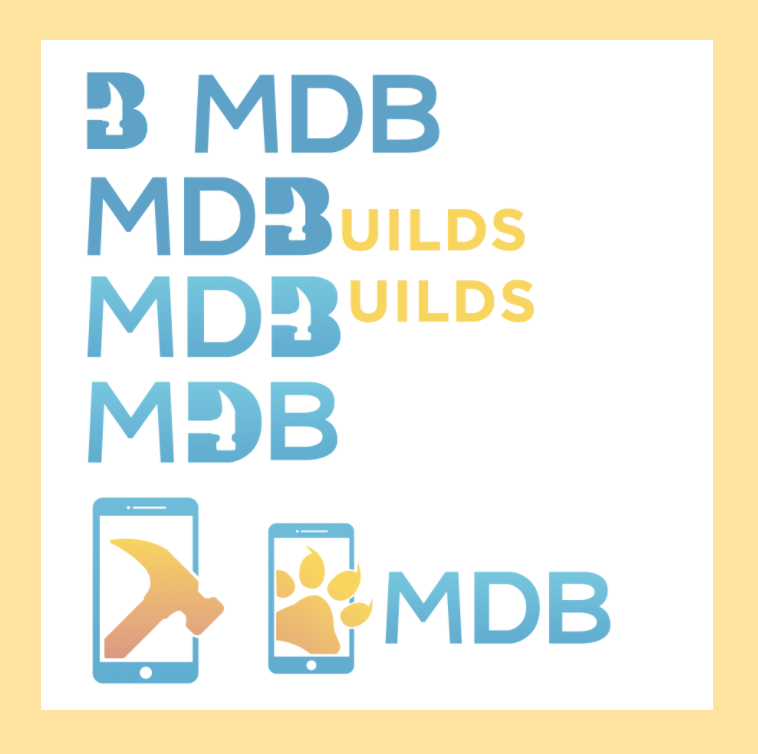
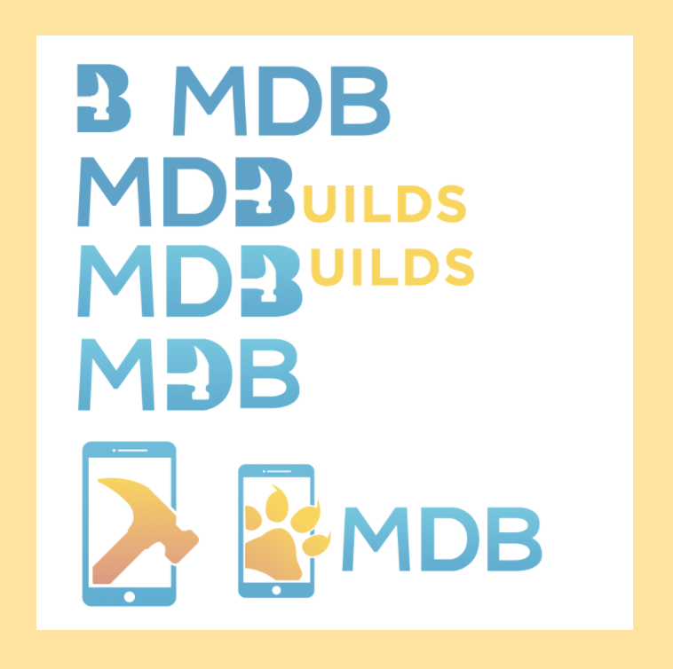

Logo Design
SCOPE: college club logo
ROLE: logo design and creation
DURATION: november 2017
Mobile Developers of Berkeley, UC Berkeley's premier mobile incubator, rebranded as one of the steps towards becoming an app development agency. As a result, I was tasked with creating a new logo for the agency: MDBuilds.

PROBLEMS
My task was to create a new logo for MDBuilds that incorporated the idea of mobile development within the restraints of our previous logo design and colors. We wanted a logo that illustrated the hard working efforts of the club yet still maintained a connection with the previous brand.IDEAS
PROCESS
 
